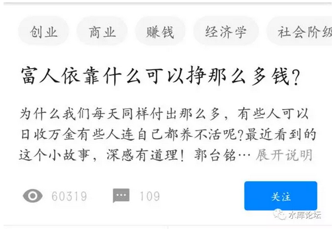
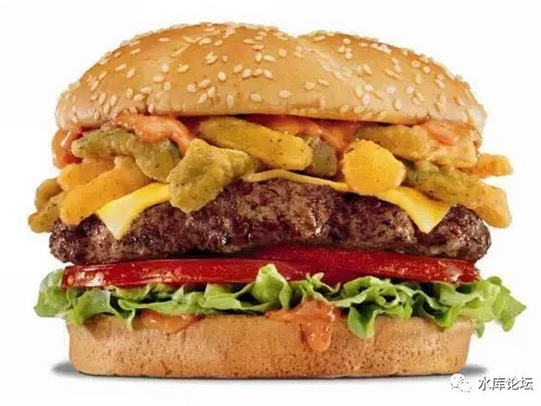
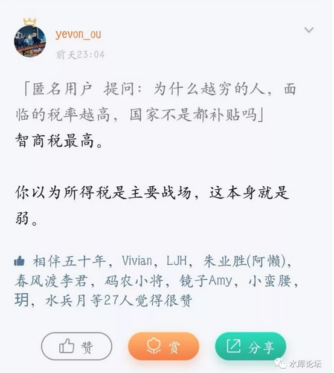
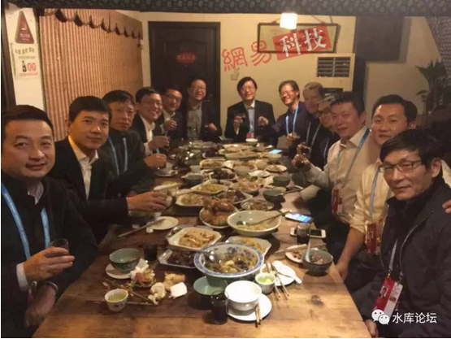
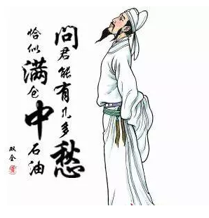

什么才是真正的财富 #1570
原创： yevon_ou [水库论坛] 2017-11-11

什么才是真正的财富 #1570
各位朋友，大家好。
很高兴"人文经济学会"邀请我做这个讲座。感谢茅于轼老师，感谢张维迎老师。
今天我们的活动，受到了广告商的赞助。也感谢广告商宋洋先生。此处请放广告。
全款垫资购房，然后转银行抵押贷，既能砍价又能省税，二套抄底非满五唯一房源利器！
宋先生长期资助《人文经济学会》，目前专注于北京，上海市场。
学问之道，分为"体，用，术"。
《人文经济学会》有很多位经济学家，他们的水平，都是极高明的。
如果要讲经济学的原理，水平是非常非常高的。
 但是，今天我们的话题，更多的偏向"用"。
但是，今天我们的话题，更多的偏向"用"。
讲一些更外围的东西。如何把经济学的原理，转化为赚钱和商机。
大师在前，我们就班门弄斧了。
一）财富是多维的
首先，我们来讲一个话题。
财富，什么是财富。
"你有多少钱"
这句话，你问一个知乎的屌丝。他是很容易回答的。
1234.56元。
因为屌丝把身体掏空，把上衣口袋，裤子口袋，屁股上的口袋。
纸币，硬币，交通卡，统统计算在内。
全部的总财产是，1234.56
屌丝毫不犹豫地回答，我有一千二。
但是更复杂点的情况，我们找一个研究生。
研究生的身上，除了纸币，硬币，交通卡。
"哗"地一下，他还掏出了一张沙县小吃的储值卡。
-
充1000，送1200.
-
现在卡里还有600.
请问，研究生的净资产。该如何计算。
充值 实得
1000 1200 ? 600
这个时候，就会有一点歧义。会有二种说法。
一种说法，认为饭卡值500.
理由是，充一千，花了一半。
但是研究生不同意。他认为值600.
因为这张卡，的确可以在"沙县小吃"，买60碗酸辣粉。别人吃粉，都是实打实地付600元。
我们来做一个统计，认为值得500元的，就是方案一的，请举手。
好了，认为这张卡值600元的，请举手。
嗯，看来500元的占大多数。
那我们继续追问，假设"充1000,送200"这种活动，不是天天搞的。
象今天一样，11.11双十一，一年才有一次。
等很久的，大型促销。
或者这种活动，仅限前1000名。
或者促销活动，要你先积分。
京东购物，积分积到白金会员级别，他才给你打折。请问，这张卡值多少钱。
假设你突然反胃呕吐，看见沙县就想吐。再也不想吃。
请问这卡还值多少钱。转让能卖多少钱。
这一连串的问题，完全把你问糊涂了。里面积分，白金会员制度，Coupon返利制度，很多都是没有精确的数学解的。所以这个问题的正确答案，应该是：
充值 实得
1000 1200 500< 不知道 < 600 600
正确的答案，应该是："不知道"。
不管你回答500，还是600
你都在试图用一个精确的估值，把这张卡数字化。
但其实这"三观"是不对的。财富在各种视角下，数额不同。
财富不是"一维"的。是"二维"的。
前二天我去看了一场电影。今年泰国最火的电影。
在座的很多位，可能也看过：《天才枪手》。
电影拍得很好，但是"豆瓣"上的影评，兴趣集中在八卦。
8G这四个年轻人的家庭净资产，能有多少，A7A8A9。
譬如女主角小琳。电影一开场，她就说，跟着爸爸的校车去上学，不用付交通费。
吃爸爸学校里的食堂，餐费很便宜。
她爸爸是老师，学费也便宜。
这个状态，就有点类似于我们包吃包住的国营企业。
你看似工资低，生活水平其实不低的。
然后小琳成绩很好，免了很多补课费。
优等生毕业，未来工资很高。
她家里人都很健康，省了很多医药费。和爸爸之间感情也很好，这是万金不换的。
你要是生一个"笨小孩"，天天补课。
补课费，药费，完全都可以折算成金钱的。
生个天才宝宝，比一般的中产阶级，过到还要滋润。还要快乐。
别看你外企上班工资高。
孩子寄托在携程幼儿园。可能还不如琳呢。
 我们举了这好几个例子。其实想说明的是一件事。
我们举了这好几个例子。其实想说明的是一件事。
财富是多维的。
传统意义上，人们总以为财富是一维的。可以用一个数字衡量。
丈母娘总喜欢打听，这个人有多少钱啊。张三好，还是李四好。
但其实，财富是多维的。就象一块水晶，在不同的灯光下，会有不同的反光。
需要通盘考虑。
最简单例子。二个年轻人。
A有500W存款
B有三套房子1500W，合计1000W贷款。
这二个年轻人的真实实力，命运岔路，差很多的。
奥地利学派认为，"效用"是一件很主观的事。
除了现金之外，其他任何东西，都不能做加法。
二）财富的估算
人类是很无聊的。
你跟他说，马云和王健林，是根本不同的二类人。
财富是多维的。有很多种主观唯心的方法，根本没法估算。首富没法排名。
但是人类是很愚蠢的，他们总喜欢打破砂锅问到底。他们总喜欢问一个问题；
"马云和王健林谁更有钱"。
这个问题，真心无聊。
因为我们前面说了，"除了现金，财富并不能简单地比大小"。
越是穷的人，资产流动性越好。
屌丝手里，几乎全是现金，类现金。因为他要准备着，随时付下个月的生活费。
屌丝很容易用现金计身价。误差不大。
可是越是有钱的人，他的资产中，现金部分就越少。就越是难以比较真实的财力大小。
十年磨一剑，有的创业者，根本看不到回报。
譬如说，马云的主要财产，是剁手巴巴。
王健林主要财产，是万达集团，四大板块。
Google的主要财产，是搜索引擎，未来科技。
你要说Google的"未来科技"值多少钱，这事是没法估算的。
有些黑科技，是为了下一个时代研发的。Bell实验室研发了多少东西。
很多科技，完全是烧钱阶段，根本没有产出的。
可你说这些钱花得值得么，值得。
必需么，必需。
这时候，有一个聪明绝顶的人站出来了。他想出了一个绝妙的好办法。
马云和王健林怎么比呢，比儿子数量！
目前二位是1:1平，二个人打成平手。

哦，不好意思，拿错演讲稿了。
有一个聪明绝顶的人站出来了，他想出了一个绝妙的好办法。
"证券化"。
马云的阿里巴巴集团，"证券化"把它切碎了。每股180美金。卖25亿股。最近总市值，在4600亿美金左右。

"证券化"是一件非常了不起的事，天才般的发明。
从学术上讲，他相当于"降维"。
财富的本质是多维的，难以估算的。顶级大富豪之间，并没有一个明确的排名。
但是"证券化"之后，就把复杂的公司估值，简化成了一个维度：
"股价"。
现在，财富又变成"一维"的了。公司值多少钱，你今天又赚了多少钱。
只需要简单地用"股价*股数"算一算，就明白了。
证券化算出了财富数值
是不是这个道理。台下赞同"降维估值"的，请举右手。
不赞成的，请把手放在嘴巴上。
让我们统计一下。
好，恭喜大家。
这一套理论，是错误的。
三）偷换概念
证券化是对的，市场的有效性也是对的。
整个事件中，它偷换了一个概念。
-
买1股是183美金
-
买10000000股也是183美金
学理工科的人，概念是极其严谨的。差一个字都不行。
市面上流行的"马云身家3000亿，马化腾身家2000亿"，诸如此类的说法，其实都是偷换概念。
熵是二维的，
不能降噪为一维。
财富还是多维的。你并不能简化信息。
错误默认在于，把"买1股"偷换成了买100000000股。
我们来看这个例子。

这一位是李河君。"汉能薄膜发电"的主席，港股编号0566.
李河君现在不怎么出现了。不过二年之前，他可是绝对的风云人物。
当时，"汉能薄膜"在香港上市，经过了四年的不懈拉升，一口气从0.15元/股，拉高到9元一股，涨了60多倍。纳入恒指成分股。
在此期间，公司的市值，暴涨到了3500多亿。个人财富超过3000亿元。几乎逼近李嘉诚。
你如果按照"股价*股数"的公式，来推算他的财富，李河君绝对是庞然大物，千亿富豪。
可是在2015.05.20，公司发生了雪崩。
这一天，短短的20分钟之内，汉能薄膜的股价，下跌了47%，市值蒸发1300亿。李河君本人财富损失1000亿。
造成这一切的罪魁祸首，抛盘一共只有10亿港币。
 如果一个人刚刚接触财经，刚刚接触财富的本质。
如果一个人刚刚接触财经，刚刚接触财富的本质。
他对这件事是没法理解的。
为什么小小的10亿，就可以损伤1000亿的财富。
你是一个千亿富翁，你把这10亿抛盘，接下来不就得了。
前二天香港Mount Nicholson开盘，全球最贵的分层豪宅。
一套房子，价值就要11亿港币。
这种房子，就是专针对李河君这样的人，目标买家的。
为什么，为什么短短的10亿抛盘，就使得股市的"账面"财富，损失了1000亿。
其实，你奥派经济学学得好。这事是很容易理解的。
"财富"并没有损失掉。
是文科生小编，理解财富的方法有问题。
是你的叙事方法有问题，不是财富有问题。
我们取"汉能薄膜"腾飞前的股价，每股0.15港元。这几年里面，公司的营业额，净利润，也没有革命性的增长。
因此"汉能薄膜"他合理的估值，翻60倍之前的，可能就40~50亿港元。
几十亿的港元。他就是一家几十亿市值的公司。李河君就是一个几十亿身家的商人。
是文科生小编，使用"股价*股数"的方法，来计算他的身家。所以犯了错误。所以才会看不懂。
而事实情况是，他是一支老庄股。随着庄家的出货，股票的价格，下跌是非常快的。
等他把80%的股权卖光，净到手也就几十亿。
凡事，你不要看"面子"。
你要看"里子"。
从根本上，李河君就是一个几十亿级别的富豪。
四）有钱人为什么有钱
在知乎上，有一个非常热的帖子《富人依靠什么可以挣那么多钱？》[1]
 我们知道，知乎是一个大学生屌丝，中低收入人群聚集的地方。没什么水平。
下面跟了差不多1500个回帖，可全部都没有讲到点子上。
"富人靠什么赚那么多钱"，
靠的是经济学上一个Bug.
中国人从农耕时代走来，我们离"十三亿农民"时代记忆，相隔不到40年。
这导致在中国人的习气上，还有非常浓的"农耕民族"习气。
和现在的商业化，信息化时代，是格格不入的。
身体进城了，脑子还停留在农耕时代。
农民信息匮乏。特别容易听风就是雨。特别好骗，容易上当。
缺乏"信息大爆炸"时代的，信息辨别能力。
前阵子微博上有个段子，麦当劳（金拱门）的汉堡，加了无数无数的防腐剂。放了七年，汉堡都没有腐烂。
你说这汉堡能吃么，这不是黑人商人么。

别人来问哥哥，哥哥从Marketing的角度。哭晕在地板。
"金拱门是做快餐的，七秒钟就吃掉。快餐的配方里面，加防腐剂干什么"。
"防腐剂很贵的好么。哪个产品经理，会浪费不必要的成本"。
产品经理都哭晕了，哭倒在地上爬。{爬的动作}
这种事，也只有中国农民才会相信。
他们完全没有分辨信息的能力。
说回金融市场，什么钱最好赚：智商税。
 在"汉能薄膜"这个例子。李河君的实际财富，是非常难以估算的。
因为新能源前途未卜，谁也不知道，科技的未来发展方向，是什么样的。
"证券化"之后，证券市场给出了一个值。
买1股，是港币$9.
好了，现在我问你，买100股，1000股，10000股，1亿股呢。
很多农村出来的人，他们很"实心眼"。
他们没见过高度商业化的社会，也没有见过商业中的骗局。
他们过来一看，9元一股，有价有市。每天成交六七千万港币呢。
他们就相信，1亿股，卖9亿。
他们不知道Scalable，不知道蚂蚁，不可以简单扩大为大象的。
不知道1股，2股的交易，是可以做假的。
不知道一项交易的价格，是可以虚高几十倍的。
有钱人为什么有钱。
有钱人真正暴富的办法，是赚股东的钱，而不是消费者的钱。
靠的是高市盈率卖股票，而不是卖商品。
信息是二维的，随着股票出货，股价会迅速降低。
下跌的速度，表示为一条曲线。
你天真以为"一维"。一维数字描述市值，于是你就中计。
这就是"财商"教育。一般的学校是不教的。
汉能薄膜，最多的一年，也只赚了2亿，还很大水分。
但是李河君，只要抛掉股票，就可以赚1000亿。相当于他500年的收入。
请大家记住一句话；
"赚钱靠bug，无八哥，不暴富"
五）面子和里子
我们轻松一下，讲点段子。
80年代末期，正好是SONY如日中天的时候。日本有四大"经营之王"。
有一天，某好事之徒去问索尼的创始人，盛田昭夫。
他说，在Forbes500强排行榜上，索尼排名XXX，巴拉巴拉。
按照营业额排名，SONY排在第几位，还需要努力。
按照市值排名，SONY排在第几位。今年上升几位，下降几位。
盛田昭夫目无表情听他唠叨完，最后说："Forbes是什么东西，不就是一本杂志么"
"你这么介意杂志的看法，去把杂志社买下来好了"。
我们常常讲"富人思维"和"穷人思维"。
其实我觉得吧，富人思维和穷人思维，有一条非常明显的分水岭。那就是"面子和里子"。
 王家卫拍的《一代宗师》是一部非常伟大的电影。里面有一句经典台词。
王家卫拍的《一代宗师》是一部非常伟大的电影。里面有一句经典台词。
"一个门派里面，有人做面子，就有人做里子"。
"名义价格"是很容易刷的。但是真正的大佬，不屑与此。
譬如说，李姓富豪中，李嘉诚实力比李河君强得多把。
李嘉诚手下那么多上市公司，随便逮一个出来，投几十亿炒作。
股票也能拼命地翻跟斗。翻出几千亿市值来。
从账面上，李超人又可以吹嘘"电讯盈科"。又可以吹嘘投资之神。
但这种事，李嘉诚很少做，人家甚至故意低调点。
恨不得富豪榜，排名多降几位。
因为"炒作"这种事，是虚的。仅仅虚名好看。
对于散户有意义，对于大佬无意义的。几百亿，找不到对手盘，根本出不了货。
你布一个局，拉一个老庄股，也就赚几个亿，反而把名气搞臭了。
得不偿失。
曾经有人问，中国最快的计算机，是"太湖之星"。运算速度达到万亿亿级别。
你这么快的计算机，为什么不去"挖"比特币。
用国家级的算力，来钱不是很快么。
因为没有意义。BTC只不过一只老庄股。有一些游资在里面炒作。
你去挖矿，连续抽钱，过几个月整个市场就崩溃了。
等你能注重"里子"了。注重实际利益；
而不是注重"面子"。傻乎乎地计算账面市值。
这时候，可以算一道"穷人"与"富人"之间的分水岭。
例如这张图。能进去的，都是业界大佬，手下至少几千个员工。
这是真正的力量。
你说你有100W枚比特币，你是不会被邀请的。
 六）资产质量
言归正传。
和"有钱人为什么暴富"相对应的，是"穷人如何保护自己的财产"。
怎么样迅速变穷。你LP双十一买东西，不会变穷的。应该予以支持。
-
11.11时，你LP是谨慎的。买股票时，你是不谨慎的。
-
11.11时，减免25元优惠券，可以考虑半小时。买股票时，25W眼也不眨。
"变穷"主要也是怨证券市场。
花几十倍价钱，接别人的老庄股。买卖资产，才是变穷的最快办法。

在这里，我要讲一个"资产质量"的问题。
你觉得你有100万，可能你并没有100W。
你觉得你有1亿，可能你并没有1亿。
我讲个段子，你想拥有一亿。最快的方法，是门口的小吃店老板娘。她塞给你一张储值卡。
"梁朝伟哥哥，卡里面有余额1亿。你每天可以来店里买螺蛳粉，只能堂吃，不能打包，不许浪费"。
这种"资产"，就是没价值的。
我们的手里，有各种各样的资产。
有[纸币，硬币，交通卡，家乐福购物卡，网上商城储值卡，存款，外币，垃圾股，蓝筹股，基金，理财产品，p2p，私人债款，原始股，滴滴的股份，美团的股份，ofo的股份，房产，红玉石，古董，甚至还有比特币，ICO，马勒戈币]。
这所有的资产，都有他们的"面值"。部分还有交易所，可以随时交易。
你每天晚上，黑灯瞎火，披头散发，坐在地板上。
数着硬币，数着产证，算算自己现有多少身家。感到心满意足很快乐。
但其实，在你的各项资产之间，"含金量"是很不相同的。
同样的100万元，如果你是买GE的股票，那么蓝筹股。价值很稳定。
如果你买"汉能薄膜"，心里就要打个问号，分分钟腰斩。
如果你100万元，是20枚比特币。那恐怕问题就更大了。ZMN也不会承认。
我们今天的讲座，叫做《什么才是真正的财富》。
我们希望告诉各位的是，透过现象看本质，追逐真正有质量的财富。
而不要用金子换沙子，把优质的资产，兑换成劣质资产。
水库论坛，以前有过《价格三篇》，他们的编号是：#550，#560，#570

在《价格卷》里面，我们提出了一个赚钱的手法：
-
优质资产 ----> 3倍的劣质资产
-
3倍劣质资产 ----> 3倍优质资产
-
循环往复
譬如说，现金是一种非常好的"优质资产"。风险几乎为零，流动性为无穷大。
你让我用现金购买"比特币"。
这么吃亏的生意。黄金换黄沙，我是无论如何也不肯做的。
但是你和我说，"BTC"目前大约￥50000元/枚。
我给你打折，5000元/枚。五万元买十枚。
作为交换条件，你一次性买NN亿。又或者是买入后"锁定"六个月，六个月不许抛。
那我权衡一下，这笔"1优换N劣"的生意，值不值得做。根据风险来权衡。
优质资产换劣质资产，一定要求加倍。
你看Bill Gates的股票，全部都是1美金时候买回来的。现在市价100美金，他就不会去购买自家股票。
水库多军买房子，一律要求"笋盘"。或者要求贷款。正常市场价，1000W现金换1000W房子。这种事水库也不肯做的。
- 穷人的富人的区别，是穷人用"市场价"去买垃圾资产。买A股，买比特币，买珠宝玉石。用优质现金，换劣质资产。
- 而富人买劣质资产，一定要求加倍。1:1是不肯换的。
七）纸币
币圈 << 垃圾股 < 珠宝 < 蓝筹股 < 现金 < 矿产 < 劳动 = 物价 < 房产 < ?
我们来看这样一个表格。刚才我们说到了"资产质量"。
尽量的左换右。
右换左，是不干的。
在这个表格里面，比较令人诧异，值得单独拉出来谈一谈的，是这一段公式：
现金 < 劳动
"回避垃圾资产，不要投机"，这个道理，绝大多数人都是懂的。
可是他们不知道，普通人的生命中，接触的最大型的"高危资产"是什么。
-
高危是现金
-
现金大概被高估了4倍。
中国目前的居民本外币存款余额，大约是60万亿人民币。
M2数字是160万亿。金融业总资产250万亿。（2016年GDP75万亿）
单单看存款数据，大概全体中国人，可以吃一年。
所有人一起躺着，什么事也不做。物资吃一年。
如果算M2，可以吃二年。算"金融业总资产"，可以吃三年。
而事实情况呢，我们社会上的物资，够不够吃三年呢。
不够，连一年都不够。
这个就是东亚国家的"货币"之谜。最典型的是日本，其次是中国。
-
M2/GDP=200%
-
金融业总资产/GDP=330%
M2/GDP这个比率，在美国大约是70%，也就是说，中国多了三倍的货币。
这个现象怎么理解呢，我们举个例子。
今天大家来清华科技园听讲座，就在马路口，街边，有个戴狗皮帽子卖红薯的。
你上去和他搭讪。
"大叔啊，您在这卖红薯，一天可以赚多少钱啊"。
"不挣钱，这不在家里闲不住，出来开滴滴么"。
"您还开滴滴啊"。
"对啊，弄堂后面，就是我的宾利。家里拆迁，分了七套公寓，八套学区房"。
"那您这么有钱了，为什么不好好享福，还要出来卖红薯啊"。
"在家里挨老婆骂啊。别人都说你游手好闲，不是劳动人民"。
在全世界任何一个地方，除了东亚文化圈。这种事情，都是不可想象的。
你就别说拉美，巴西，非洲那种地方了。
非洲人的规矩，星期一从来不上班的。
因为他们星期六发工资，发了工资，就全部都去买酒喝。喝得醉醺醺，桑巴桑巴。
把一个星期的工资都花光，花到没钱了。再来打几天工。
你换到北非，中东，或者东欧这种地方。你问他们，你有了3W美金，5W美金，10W美金，要多少钱，你就不愿意工作了。痛痛快快出去玩二年。钱花光了再回来。
我告诉你，在这些国家，这个金额都不高。撑死了也不会超过€50000的。

只有在中国，中国是一个神奇的国度。一个人拆迁分了八套房子，5000W净资产。三辈子也花不完。
第二天上班，你看见他拿着6000元的工资，老老实实又坐在那里了。
有些老太太，家里存了二三百万定期。可是不舍得吃，不舍得穿。一件衣服缝缝补补好几年。一个月生活费2000元都不到。
这样的国民性，导致怎样的结果。
"中央银行可以大规模地增加货币，而不会引发通胀"。
你永远都在劳动，劳动，劳动。
你永远都在储蓄，储蓄，储蓄。
你有了100W，你还在劳动，还在储蓄，一点都不懂得享受生活。
你有了500W，你还在劳动，还在储蓄，一点都不懂得享受生活。
你有了5000W，你还在劳动，还在储蓄，一点都不懂得享受生活。
在中国，因为一个"国民性"的问题。
不劳动是可耻的，吃利息是可耻的，是被人看不起的。
所以，无论你有多少钱，你永远都在劳动。
这就在"劳动---消费"的价格之间，产生了一个错配。
劳动的价格被压低。你的工资被压低。[4]
"消费"的利益，被拉高。你可以享受到廉价的商品。
换句话说，"完全不工作，拼命地花钱"才是对你人生最有利的博弈方法。
举个例子，在目前北京，上海这样的城市。找一个钟点工阿姨，上门帮你打扫卫生，大概是35元/小时。
其中许多阿姨，生活并不窘迫。家里可能也有三套房子，几百万的身家。
她们出来做钟点工阿姨，纯粹是"基因"驱动。不劳动就不舒服。
在这个情况下，"请阿姨"是极明智的举动。
出门去当清洁工阿姨，才是愚不可及的行为。
如果你妈想出去当清洁工，你一定要千万阻止她。家里几百万。
中国目前的经济结构，社会结构，是极其诡异的一种状态。
人类文明，千百年来，难得一见的状态。
中国的"储蓄率"长期在60%以上，这么吃苦耐劳，[有了几百万还出去当清洁工]的民族，举世难找。
而我们今天想讲的话题呢，是"现金购买力的不可持续性"。
我们今天每个家庭都有600万，但是老阿姨们只舍得拿2000元出来消费。
不舍得吃，不舍得穿。拿微薄的利息。
物价才可以锁死在这么低廉的价格上。
请个打扫卫生，才只要35元。
但是人口趋势的变迁，是会摧毁这一切的。
中国今年80后37岁，90后27岁。
00后，最大的已经17岁。
再过不到十年，"21CN"世代，一定会踏上主流社会。未来的世界，是00后，10后的世界。
而"21CN"世代，他们出生的时候，就已经很富裕。很多还是独生子女，泡在蜜糖里的。
对于"21CN"世代来说，"家里面放着600W不用，还要弯下身去赚35元/小时"这种事是不可想象的。
00后，10后，会做什么事。
用大腿想也知道，拿钱出来花啊！
最多再过一代人的时间，中国的人口结构，就会巨变。
中国目前的M2/GDP是220%，是正常水平的三倍。
中国的物价能维持这么低，人工成本能降到35元/小时。是因为有老一辈任劳任怨，在辛勤地工作。
如果中国降到"世界平均"水准，哪怕只要不是这么变态的水准。
如果中国人变成巴西人，中东人，法国人，印度人的素质；
中国的物价马上飞涨。
我们只需要看香港。HK是一个相对老龄化，相对富裕的城市。
目前香港的"建筑工地"劳动，大约是5000港币/天。
15万港币，一个月薪水。
香港房子光"土建"费用，就要40000元人民币/平米。
而且香港人交楼，基本上都是毛坯房。室内只涂了清漆。
如果你要把装修都带上的话，还要20000/平米。
也就是不算土地，建筑成本6W/m。
八）杠杆式交易
币圈 << 垃圾股 < 珠宝 < 蓝筹股 < 现金 < 矿产 < 劳动 = 物价 < 房产 < ?
怎样才能赚很多很多钱。
有二种模式。
-
一种方式，资产差换好。把垃圾股卖给散户，换成现金。
-
一种方式，是翻倍交易。打三折买入大量翡翠，慢慢卖。
但是，还有第三种方式："借贷交易"。
因为，你"个人财务"优化，终究是有限制的。
在过去十几年，涨得最快的资产，创造几千几万亿财富的，主要是房地产市场。
但是哪怕你把所有的钱，全部转成"房子"。从2000年开始，静默持有十几年。
你的收益是多少呢，大概18倍左右。
卖垃圾给散户，IPO上市，来钱更快。
但是门槛太高。全国也就几千家上市公司。
如果你想获得更多的收益，就一定要使用"杠杆交易"。
最典型，例如"贷款买房"。
首付三成，贷款七成。
房子从100万，涨到1800万。
首付30万，大概是6000%的收益。
但是关于"贷款买房"这件事情，很多人理解是错误的。
买"房"并不是必须的。
买别的东西，也是可以的。
在美国华尔街，有一种非常流行的"对冲"交易。索罗斯超级有名的"对冲基金"，也是由此来的。
对冲基金的原理，是找二样东西。不一定要现金。
-
白银/铜
-
英国股市/法国股市
-
中国移动/中国联通
-
Intel/AMD
-
七月原油/九月原油
其中，中国移动和中国联通，是竞争对手。
二家公司在中国市场打得你死我活。中国移动主攻TD-LTE，中国联通主攻FDD-LTE.
华尔街非常聪明。"对冲基金"一方面买进中国移动的股票。
一方面，抛出同等金额的中国联通股票。
"中国移动/中国联通"的股票价格比，和大盘指数，中国经济，美联储缩表等等干扰，全部都没有关系。
你赚钱还是亏钱，只看一个指标：
移动赢，还是联通赢
我们今天讲"贷款买房"。很多人以为是向银行背债，是做房奴。
其实他们的三观，是非常非常歪的。
"贷款买房"这件事赚不赚，亏不亏，关键只看一件事：
现金和房子，哪个涨得更快。[2]
我们看回这个表格：
币圈 << 垃圾股 < 珠宝< 蓝筹股 < 现金 < 矿产 < 劳动 = 物价 < 房产 < ?
在这个表格里，"做空"左边任何一项资产，"做多"右边任何一项资产。
例如："股票/现金"。
"现金/黄金"
"现金/物价"
"股票/烧鹅"
其实都是赚钱的。
在所有的资产里面，"数字货币"是最弱的。
在一个比较长的跨度里面，譬如十年八年，绝大多数的ICO会跌掉99%以上的价值。跌剩"一文不值"。
甚至包括"比特币"。
在富人眼里，比特币就是一只老庄股。
和李河君一样，根本不入流。
那么别人说，好啊，那你"做空"数字货币。譬如"比特币/房产"可不可以。
你现在去沽空BTC，可不可以。
答案是不可以。
因为流动性太低的东西，不可以沽空。老庄股只能卖，不能做空。
你看薛蛮子搞的"马勒戈币"，那玩意根本就是一个笑料。过了几年，根本没有人维护。价值归零。
但是你去做空，借300W元的"马勒戈币"去买房子，行不行。
答案是不行。
期货学告诉我们，"马勒戈币"总市值2500W人民币。你借300W，已经12%了。
这么大的仓位，庄家可以"逼空"。
把市面上的货扫光。使得你没法补仓。只能高位任人宰割。
可惜这些"期货做庄"的事情。教科书也是不教的。
中国几乎没有做空市场。人们唯一可以借的，只有"现金"。
你只能选"现金/物价"
"现金/房产"
"现金/？"
九）投资标题的选择
在未来的时代，"纸币"大概率是贬值的。
如果可能，我希望囤积大规模的"劳动券"
譬如说，家里的阿姨35元/小时。
我买你10000张券，35万元。以后你每次来擦桌子抹灰，我给你一张券。
俺不介意把未来壹佰年都买断。
什么货币的复利啊，回报啊。35万元存银行的利息啊。
你谈也不用和我谈。
这些都是错误财商教育。[3]
我们很小的时候，馒头0.05元一个。
我很想在1980年的时候，囤积几万个馒头。以后每月早餐吃一个。
可惜的是，馒头要过期，腐坏。也不能囤积。
我们仔细想一想，在当年的1980年，在今天的2017年。
哪怕你知道"货币"购买力保不住，知道纸币被高估，知道资产质量有差别。
可是你能选的对策不多。
因为你真的没有什么项目，可以"保值增值"。
在过去的十几年，我们选择了"买房保值"。房地产也的确给了我们不错的回报。
但是我们仔细想想，房地产，作为一种保值工具，还是存在很多缺陷的。
最主要的是；
1）房子本身仍有折旧，再好的小区也在不断老旧中
2）政府可以造新城，地段稀释越来越快。造销品茂越来越不费力。
3）房子只是生活的一部分，衣食住行还有诗和远方
4）财富越多，会造成政治上的弱势。被要求再分配和加税
长久以来，我们一直冀望找到一种更好的资产。就好比玄幻小说中写的通用货币"蓝晶"一样。它必需可以做到；
1）稀缺。不因工业革命和技术进步而贬值。
2）通用，具有广泛，必需，大规模，深入的用途。
3）易于移动，能小规模出售和变现。
4）不受"均贫富"的迫害，最好能加强你在政治上的话语力。
这其中，最难的是第一条。
"不受科技进步，大规模的生产，而具有持续的稀缺性"。
这条要求，难，很难，非常难。
我们知道，在工业革命的时代，人类的财富，是以指数级数乘长的。
前二天写了篇文章，说中国GDP每年增长6.5%，也就是总财富每11年翻一番。
每过11年，就再造一个北京城。
在大工业时代，你想要拥有一项"稀缺"资产。
这是非常非常困难的。
更为严重的，是如同张维迎教授说的，"经济学的真谛，并不是竞争，而是替代"。
就好比你垄断了全世界的石油，石油是世界工业必不可少的命脉。
你得意洋洋，OPEC可以涨价了么。
但经济界真正给出的对策，是多元化能源。风能，太阳能，核能。
另一方面，"节约能源"的行动盛行。汽车发动机的效率，越来越高。
竞争从来不是在正面击败你，它是选择一个替代品，替代你。
击败柯达的，从来不是富士交卷。而是数码相机。
大工业时代，
没有任何一样商品，可以靠稀缺和垄断活下去。
因此，什么东西，可以在"未来时代"，跑得比生产力还要快。
什么资产，可以比"科技"还要快。这是想破头也想不出来的。
{席下的，有人有意见么}
有人说，是字画古董。
在我们在《正本清源比特币》《掀桌子的一代人》《黄金已死》等系列中，已经说到了。
所谓的艺术品，古董，归根到底，还是人的思念。
而人类的喜好，是个大IP，和所有的商品一样。可以通过广告和宣传来洗脑的。
天底下并没有永垂不朽的艺术品。
"古董的偏好"也是可以批量制造出来的。
有很多二三线的画，已经完全没有流动性，接受度。
我们从"贷款买房"进化成"贷款买X"。
请问，哪一项宝贝，能跑得比科技更快。在未来人类的财富大饼中，占据更大的份额。
谜底是：
孩子！
孩子，人类，人口。
只有人类，才是唯一可以跑赢"科技"的。
无论科技发展多快，孩子的收入增长更快。人操纵机器。
所以我们今天的结论是："贷款造人"。
家族迅富的方法是，想尽一切办法贷款造人。然后介入全社会的财富分配，继承低生育民族的财产。
真正的财富，是娃本位。
好了，今天讲座就到这里，谢谢大家。
（yevon_ou@163.com，2017年10月5日子夜）
[[1]]《富人依靠什么可以挣那么多钱？》https://www.zhihu.com/question/35540121
[2]现金的涨速，可以视为利率。
[3]"辛勤工作赚35元/小时，攒起来靠复利致富"，这是一个巨大的笑话
[4] 利好资产价格，利空通胀